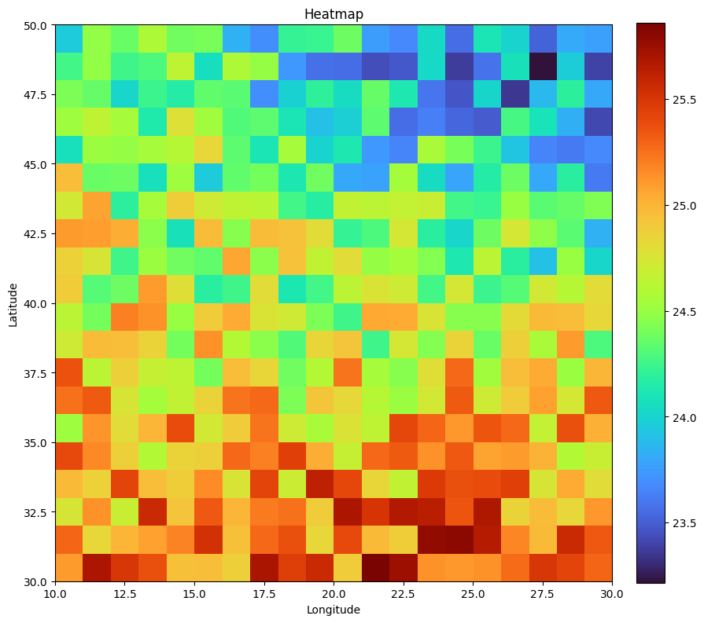

Heatmap
1. Basic Heatmap
# Step 1: Import Libraries
import numpy as np
import matplotlib.pyplot as plt
# Set a unique seed for reproducibility
np.random.seed(42)
# Step 2: Create Sample Data
# Define latitude and longitude ranges and create meshgrid
lat = np.linspace(30, 50, 20)
lon = np.linspace(10, 30, 20)
LON, LAT = np.meshgrid(lon, lat)
# Create a base temperature field as a function of latitude and longitude.
temperature_data = 25 + 10 * np.sin(np.deg2rad(LAT - 35)) * np.cos(np.deg2rad(LON + 95)) + np.random.uniform(-0.5, 0.5, size=LAT.shape)
# Plot the heatmap using the 'turbo' colormap
plt.figure(figsize=(10, 10))
im = plt.imshow(temperature_data, extent=[lon.min(), lon.max(), lat.min(), lat.max()],
origin='lower', aspect='auto', cmap='turbo')
plt.colorbar(im,fraction=0.046, pad=0.04)
plt.xlabel('Longitude')
plt.ylabel('Latitude')
plt.title('Heatmap')
plt.gca().set_aspect('equal')
plt.show()
